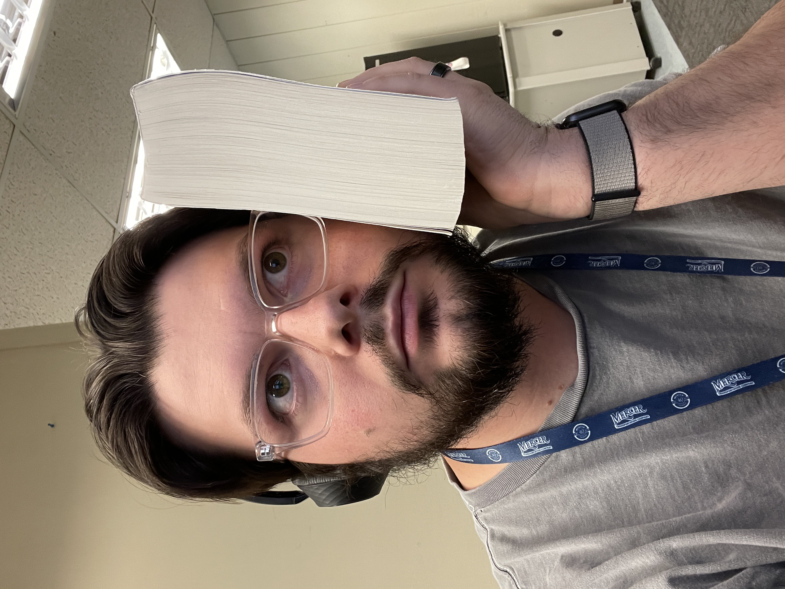

Oathbringer Book Review
November 29, 2022

Oathbringer Cover
This was a difficult review, but still a 5/5!
Reviews Book Reviews Cosmere in ReviewNovember 29, 2022
Oathbringer Cover
This was a difficult review, but still a 5/5!
Reviews Book Reviews Cosmere in ReviewThis is going to be a difficult review, not because this was a bad book. A difficult review because I'm struggling to give this a different score than a 5/5. I love this book, I absolutely love this book. Probably because I love this world and story. I love the Stormlight Archive.
Still a 5/5 but, I struggled to give that score.
This book, Oathbringer, for my copy was HUGE. 1233 pages total, pictured below. And I've read some large books previously and those have been the other Stormlight Archive books, but this being 1233 pages was a lot..
Me with my Oathbringer Paperback.. HUGE
I will be dumping my thoughts below!
WOW. How to even communicate this book. You have to have previously read The Way of Kings, Words of Radiance, and Edgedancer, before you read this book. But we've got Kaladin deflecting a high storm, JASNAH IS BACK. Parshendi are now known as listners, singers, and now Fused (which I think are just parshendi in Storm-form? right?).
Dalinar and the Stormfather, are funny together. I appreciate the way they communicate.
I read Warbreaker and Edgedancer right before reading this, and that was exactly when you should've read those books. There are particular characters in Oathbringer as were in those books!
You can read my reviews of those here:
The Lift implimentation, the Vivenna implimentation, everything that occurs to Dalinar, the Bridge Four parts, and truly only specific chapters. Not all chapters made this a 5/5, and now more thoughts..
Is this book just a huge interlude book, just making things happen to happen? hmmm, might be where I'm getting my feelings from.
The Sanderlanche in this book, I was blown away. This, I believe saved the book for me. This story was incredible. This world has gotten so large, but things in OB seemed to be dragging. I kept going back and forth on almost every chapter on if I was enjoying my time. This book was long. 1233 pages in the paperback that I read. And it took so long to get through this book. Maybe I was too worried about what to read next, but I felt that so much of this book just took so much time to occur.Oathgates are awesome. The magic system is so cool. I can't wait to see more Surgebinders. Dalinar is my favorite of all characters in these books. Lift is also incredible, like a little sister. Dalinar's backstory was really good to see. I'm so intersted in learning more about Adonalsium and the Shards and the Heralds. I've been confused about the Heralds and how they are alive and how they can die in these books but I struggled with the Shadesmar section (Cognative Realm), I guess I thought there wasn't going to be a full "other world" but it sure seems like it is an entire other world. So, I wonder what that means with the Spiritual Realm, is it an entire "other world" similar to Shadesmar and the Physical Realm? I love the Stormfather and Dalinar.Kholinar battle.. wow, great stuff! I love Hoid / Wit. I do feel, during the Shadesmar section, that the Fortune Teller is a world hopper (because of the "heightning, domi.." references). We got Cultivation.. from the Midnight Mothers.. mother? Elokhar is dead.. MOASH! Fighting the Thrill!
This book made me care about so many people that I hadn't care for before.
I love the Stormlight Archive and I will recommend this series to anyone. No, it's not done yet, and I haven't even read all the books in the series that are out right now, check Brandon Sanderson's Website, 17th Shard.com, and my Cosmere in Review for more information regarding any news on Brandon's Work!
This was truly an amazing book and I look forward to coming back to the Stormlight Archive, but I'm going to take a bit of a break..
Life before Death, Strength before Weakness, Journey before Destination.. The Immortal Words of the Knights Radiant!
Click for reviews in the series!